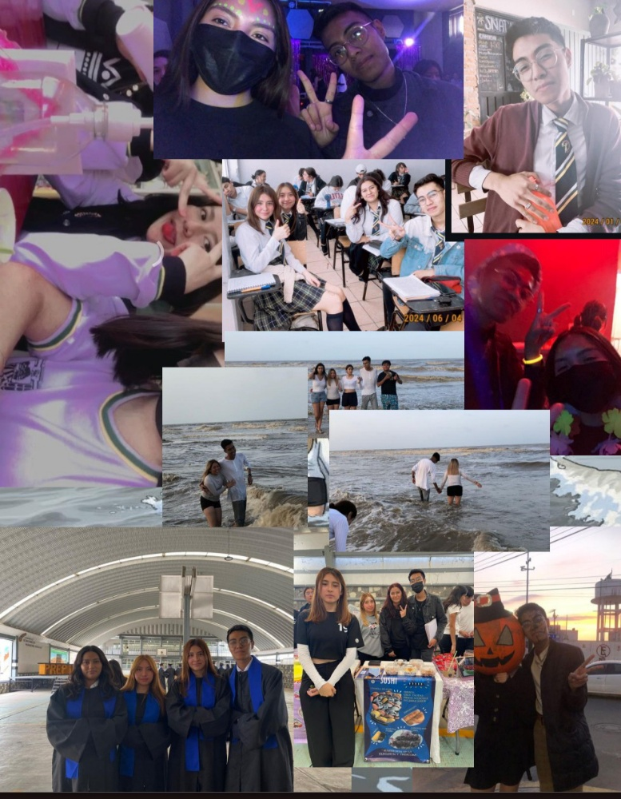

LOVE MYSELF: THE MOST BEAUTIFUL MOMENT IN LIFE FOREVER
Carta Final: Más allá del Horizonte
Dedicado a Ximena
El día de hoy es una tarde tranquila. El sol se oculta lentamente, la luna comienza a asomarse y, poco a poco, las estrellas empiezan a brillar. Y entre esta transición suave entre la luz y la oscuridad, una pregunta vuelve a mí: ¿En qué momento dejamos de preguntarnos quiénes somos y empezamos a vivir como si ya lo supiéramos? ¿Quiénes somos cuando dejamos de intentar ser lo que los demás esperan de nosotros?
Durante mucho tiempo creí que estas preguntas eran un error, una señal de que algo en mí estaba roto. Hoy entiendo que no eran una grieta... eran un nacimiento.
En los días en que me adentraba en el universo de BTS, descubrí un libro magnífico que se convertiría en un espejo inesperado: Demian: La historia de la juventud de Emil Sinclair, de Hermann Hesse.
En sus páginas encontré la historia de un joven que descubre que crecer no es adaptarse, sino romper. Que el verdadero nacimiento no ocurre cuando llegamos al mundo, sino cuando nos atrevemos a quebrar el cascarón de aquello que otros decidieron que éramos.
Sinclair no buscaba ser mejor. Buscaba ser real.
Y para eso tuvo que atravesar la soledad, la confusión, el miedo, la contradicción. Tuvo que perderse para empezar a encontrarse.
Al leerlo, sentí algo inquietante y, al mismo tiempo, profundamente catártico. Porque no estaba leyendo una historia ajena. Estaba leyendo un reflejo. Mis caídas. Mis máscaras. Mis crisis. Mis intentos de encajar. Mis ganas de huir. Mis deseos de comprender.
Entonces comprendí que este proyecto, estas cartas, estos años... no eran solo recuerdos. Eran etapas de un mismo proceso. Un camino que, sin saberlo, me estaba conduciendo hacia la respuesta de la pregunta que planteé desde Intro: Serendipity.
Esta no es solo la última carta. Es el lugar donde todo empieza a tener sentido.
Enero de 2024. A principios de año, mis tíos de la ciudad vinieron a pasar unos días a mi casa. Como ya lo he contado, mi tía es psicóloga, y una tarde comencé a hacerle preguntas. Así nació una conversación que terminaría marcando ese inicio de año.
Dentro de esa plática le hablé de un proyecto que llevaba trabajando desde finales del año anterior: la escritura de un libro. Le mostré lo que tenía, y para mi sorpresa, le gustó profundamente. Tanto, que decidió pagarme un pequeño taller sobre cómo escribir un libro. De ese taller saqué más de lo que imaginaba.
En esos mismos días, mi tío me hizo la pregunta que comenzaba a pesarme cada vez más:
—¿Qué vas a estudiar cuando salgas de la prepa?
Le respondí con honestidad que no lo sabía. Que me preocupaba, porque las preinscripciones se acercaban. Él notó las fórmulas de cálculo pegadas en mi pared —una de mis técnicas de estudio— y me habló de una carrera poco conocida: Matemáticas Aplicadas y Computación. Conocía a alguien egresado al que le iba muy bien.
Recuerdo que en ese momento no le di demasiada importancia. Pero la idea quedó sembrada.
Ese mismo mes inició el taller en línea. El primer día, mientras los participantes se presentaban, me di cuenta de que todos superaban, por lo menos, los treinta años. Yo era el más joven. Al principio me resultó extraño tomar clases con adultos, pero pronto lo agradecí. Escuchar sus experiencias, sus miradas sobre la vida, sus procesos, me enriqueció profundamente.
Enero fue un mes de expansión... y también de angustia. Tenía que decidir. Y pronto.
La partida de mi madre de casa parecía no haberme afectado, pero lo había hecho. Sumado a un comentario de mi abuelita cuando me dijo que a veces hay que renunciar a sueños para tener una vida mejor, algo se desacomodó dentro de mí. Fue entonces cuando empecé a investigar más seriamente sobre MAC. Poco a poco, la carrera comenzó a convencerme. A finales de ese mes, tomé una decisión: la tramité para el preregistro de la UNAM.
En febrero me tocó ir a Ciudad Universitaria para el registro de huellas y datos. Fue la primera vez que salía tan lejos solo. Para mí era una aventura: yo, que siempre había vivido entre mi pueblo y sus alrededores, iba a enfrentarme a la ciudad.
Ese día la ciudad me dio la bienvenida con una novatada, recibiéndome con una manifestación que obstruyó la vía pública.
Recuerdo ir en el metrobús hacia Perisur y que nos bajaron cuatro estaciones antes. Caminé largo rato. Crucé gran parte de Ciudad Universitaria sin saber bien por dónde iba. Fue un caos... pero también fue mi primer acto consciente de independencia.
Cuando llegó el 14 de febrero, decidí escribir cartas a todas las personas que habían significado algo para mí en la prepa. Ese día me dediqué a entregarlas una por una. Dentro de esas personas estaba Julia. Aunque ya sabía su respuesta, la amé hasta los últimos días de Preparatoria.
Sabía que tal vez sería el último 14 de febrero en el que podría hacer algo así. En esa carta, muy íntima, le escribí cosas que hoy no recuerdo con precisión, pero que en ese momento nacieron desde lo más honesto de mí. Fue como una forma de darle cierre a esa historia y a mi corazón.
A finales de ese mes comencé a darle clases de matemáticas a Paloma, y poco tiempo después también a Julia. Con una nueva perspectiva y apoyado en lo que estaba aprendiendo sobre psicología del aprendizaje, intenté dar lo mejor de mí. Disfrutaba profundamente enseñar, ver cómo algo que antes parecía imposible comenzaba a volverse claro para alguien más.
En marzo ocurrió algo que guardo con mucho cariño: la fiesta sorpresa de Paloma. Decoramos su cuarto y, cuando entró y nos vio a todos ahí, su expression me llenó de calma. Ver su felicidad me dio una paz que no sabía que necesitaba.
A finales de ese mes celebró su cumpleaños en grande. Ese día me la pasé increíble. Mi corazón estaba cálido... hasta que por la noche mi madre me llamó por teléfono. Me dijo algo que me lastimó profundamente. Salí del salón de fiestas para llorar un poco. Después busqué a Paloma y le pedí si podía quedarme en su casa. En ese momento no quería irme. Me sentía cómodo. Quería que esa noche durara para siempre.
Las semanas siguientes transcurrieron de forma aparentemente normal, hasta que comenzaron a surgir diferencias: por un trabajo en equipo, por actitudes, por silencios.
Hubo momentos en los que fui grosero con ellas. Y lo único que puedo decir de ese tiempo es una disculpa sincera. No tenía la inteligencia emocional para manejar lo que me pasaba. Mis problemas familiares, la presión por la universidad, mis constantes crisis internas, mis muertes y reconstrucciones... todo me estaba agotando.
Hasta que un día decidí no callarme más.
Reuní a mis tres mejores amigas, pero esta vez no para hablar de lo de siempre. Decidí hablar sobre lo que no me parecía de nuestra amistad y mis propios errores como persona, la llamada "plática incómoda" que ahora entiendo que es necesaria para sanar y llevarnos mejor. De esas que no buscan pelear, sino comprender. Donde uno se atreve a ponerse en los zapatos del otro y a mostrarse sin máscaras.
Y algo se acomodó.
La escritura del libro tuvo que pausarse. Se acercaba el que quizá sería el examen más importante de mi vida: el de ingreso a la universidad. Mi presión ya era alta, pero se intensificó al saber que solo había metido una opción.
Pasé semanas enteras estudiando. Exámenes simulacro. Videos. Cursos. Noches largas. Hasta que llegó el día.
Sabía que no estaba preparado para moverme solo por una ciudad que apenas conocía para llegar a un lugar desconocido a las ocho de la mañana. Afortunadamente, a un compañero de salón llamado Zenaido le tocó el mismo sitio y la misma carrera. Me fui con él y su familia.
Desde que lo conozco, Zena siempre ha sido alguien sereno, brillante con la programación, con una facilidad que siempre me sorprendió. Conociendo su historia, muchas veces he pensado que él merecía incluso más ese lugar que hoy yo ocupo.
El día del examen sentía algo imposible de describir. Un nudo de emociones. Un ruido interno constante. Estaba frente a algo que creía definiría mi futuro. Mi corazón iba rápido. Mi respiración se desordenaba. Y, sin embargo, poco a poco, logré tranquilizarme.
Al salir, me sentí liberado. Como si hubiera soltado un peso enorme. Pero enseguida llegó otro: la espera. La incertidumbre. La angustia que me acompañaría hasta julio.
Decidí no vivir esos meses desde el miedo. Si iban a ser los últimos en la prepa, quería que fueran los más intensos y mejores.
Ese mismo mayo inicié un proyecto personal: doce cartas dirigidas a Paloma. En ellas le compartía mi filosofía personal y el impacto que todas ustedes habían tenido en mi vida. La primera se la di en persona. Le expliqué que cada viernes dejaría una carta escondida en su mochila.
Era un regalo... pero también una metáfora. Doce cartas. Doce semanas. Una cuenta regresiva. Un recordatorio de que el final se acercaba... y de que debía vivirlo con presencia.
Lo que vino después fue algo que aún me cuesta describir. Nuestra relación se fortaleció. Después de aquella conversación, algo se volvió más honesto entre nosotros. Diana se empezó a juntar más con nosotros y menos con su novio. Y, aunque suene egoísta, lo confieso: me hacía mucha falta tener a mi mejor amiga a mi lado.
Sé que hubo tiempos perdidos. Pero agradezco profundamente lo que sí fue.
Los últimos meses
Académicamente, comencé a disfrutar como nunca los proyectos finales. Amé las exposiciones de Historia, Ciencias y Filosofía. Incluso hubo una vez que, junto con Paloma y Andrea, decidimos exponer sobre el Flow en la clase de Inglés. Aprovechamos que la maestra nos dio libertad en el tema.
Tuve pequeñas charlas con varios profesores. Momentos breves, pero significativos. Cada conversación se sentía como una pieza más que se acomodaba dentro de mí.
También decidí abrirme más a mi grupo. Me relacioné con personas con las que antes casi no hablaba. Trabajé con distintas personas solo por la curiosidad de saber cómo era convivir con alguien distinto a mí. Tuve pláticas cortas con muchos de mi salón. Todo eso me alimentaba.
Y hubo un territorio completamente nuevo: el baile.
Paloma me invitó a un curso de salsa al que ella iba con doña July. Al principio me sentía inútil. Me frustraba. Salía de las clases con ganas de desaparecer. Pedía disculpas todo el tiempo por pisar a las señoras. Algunas hasta me miraban con desaprobación. Pero, poco a poco, algo cambió. Empecé a agarrar el ritmo. Lo único que lamento es no haber continuado, porque la vida tenía otros planes para mí.
Así llegaron los últimos meses, hasta que entramos en julio. El día de mi cumpleaños no tenía planes. Caía entre semana. En la escuela me dieron una calidez distinta. El salón entero me cantó las mañanitas. En ese momento me sentí incómodo... pero hoy lo guardo en el corazón. Me hicieron sentir visto. Especial. Y mis buenas amigas estaban ahí.
Al volver a casa pensé que el día había terminado. Estaba con mi abuelita cuando tocaron la puerta. Abrí... y eran Paloma y Diana. Con comida. Con juegos. Con sorpresa. Era la primera vez que me hacían algo así. Me sentí profundamente conmovido. Feliz. Hicieron ese día aún más especial.
Poco después hicimos un proyecto de Economía, una empresa de sushi que se vendió como pan caliente. Armar el stand. Vender. Reír. Creo que esa fue la última vez que disfruté de verdad un salón de clases en la prepa. Los maestros se despidieron hablando del futuro y de cómo nuestras vidas luego de esto cambiarían y tomarían rumbos distintos.
Y entonces llegó el día que tanto temía.
El 10 de julio de 2024 fue la ceremonia de titulación. Me sentía feliz... y devastado. Todo estaba terminando. Pensé que mi madre no había ido, pero al final supe que sí. Cuando terminó la ceremonia, me apresuró para irnos porque había reservado un lugar para comer. Me entristeció no poder tomarme fotos con casi nadie. Solo con Vania, porque me la encontré en el camino.
Veracruz - el ritual de despedida
Se dice que cuando alguien ve el océano por primera vez, siente una mezcla de calma y expansión. Algo parecido me ocurrió el viernes 12 de julio de 2024, cuando con mis buenas amigas emprendimos el viaje de despedida a Veracruz.
El trayecto fue hermoso. Los árboles, la sierra, la neblina. Sentí que algo dentro de mí se alineaba con el paisaje.
Al llegar, mis sentidos despertaron: el sonido del agua, el olor salino, la humedad en la piel. Cuando bajé del vehículo me quedé mirando el mar. El agua estaba oscura por las lluvias. No me decepcionó. Solo entendí que era un mal tiempo... y aun así, un momento perfecto.
Cuando nos acercamos más, vi cómo el cielo se unía con el agua en el horizonte. Pensé en el infinito. En las culturas que veían el océano como un límite sagrado.
Lo que vino después fue magia: juntar conchas, sentir las olas empujar mis pies, los toboganes, las pláticas nocturnas, el calor bochornoso. Tres días suspendidos en el tiempo.
El 18 de julio llegaron los resultados de la UNAM.
No quería entrar a la página. Me temblaban las manos. Bajaba lento. Hasta que vi mi número de cuenta. Una "S". Seleccionado. No lo podía creer. Lloré. Mi alma se tranquilizó por primera vez en meses.
Después, salimos a desayunar una vez más. Compartimos logros. Entregué la carta 12 a Paloma. Ese día fui enfermo. Sabía que era la última salida así. No me arrepiento.
La despedida fue emotiva. Nos deseamos suerte. Y luego lloré en privado. Porque sabía que después de eso, juntarnos sería más difícil. Metafóricamente hablando, cada quien empezaba su camino. Y yo tenía miedo.
En psicología existe algo llamado espacio liminal: ese lugar interno donde ya no perteneces al pasado, pero aún no habitas el futuro. Es un sentimiento agridulce. Se reconoce lo vivido como valioso... y al mismo tiempo se asume su fin. Eso era exactamente lo que yo sentía. Tenía miedo de crecer. De dejar todo atrás. Pero entendí que ese dolor era necesario.
Gracias a mi tío consiguió rentar un cuarto en la ciudad. Y es así como finalmente a finales de Julio del 2024 me fui de casa, dejando atrás a mi abuelita querida que siempre me acompañó en toda mi vida, a mi madre que después de todo nunca me dejó de apoyar económicamente, a mis amigos con los que tantas experiencias viví y en especial a ustedes, las personas que me ayudaron a crecer y a evolucionar quien era cuando más lo necesitaba.
Ahora, en la actualidad, algunos estudian, otros trabajan, algunos ya se juntaron, otros incluso son padres. Cada persona es un universo entero. En estas cartas omití cientos de escenas, miles de detalles. No porque no importaran, sino porque no cabían. La vida no se puede escribir completa.
Y mientras buscaba entender ese sentimiento agridulce que me acompañaba —esa sensación de estar muriendo sin morir— también fui encontrando las respuestas que llevaba años buscando.
La respuesta nunca estuvo afuera. Estuvo en mí.
Para poder crecer sin huir de mí mismo.
Para poder elegir sin miedo.
Para poder amar sin perderme.
Primero tenía que aprender a amarme.
Comprendí que amarme a mí mismo no era creerme perfecto, ni fuerte todo el tiempo, ni suficiente siempre. Era reconocer que mi valor no desaparece cuando fallo. Que mis crisis no me hacen débil. Que mis errores no me anulan. Que mis sombras no me quitan humanidad.
Amarme era dejar de tratarme como un proyecto defectuoso y empezar a verme como un proceso vivo.
Hoy sé que amarse a uno mismo es incluso más difícil que amar a otros. Pero es necesario para amar de forma saludable. Porque implica mirarse sin máscaras. Escucharse sin mentirse. Acompañarse incluso cuando uno no se gusta.
Pero también sé que es el primer paso hacia la individuación.
Y así vuelvo al libro que, sin saberlo, me acompañó durante todo este viaje: Demian.
Sinclair aprende que nadie nace sin antes destruir su mundo. Que crecer no es adaptarse: es romper. Que el verdadero nacimiento ocurre cuando el cascarón se quiebra. Cuando dejamos de vivir en el mundo que otros construyeron para nosotros y nos atrevemos a mirar hacia adentro.
Sinclair no busca ser mejor. Busca ser real.
Y para eso atraviesa la soledad. La confusión. La culpa. El deseo. La contradicción. Se pierde. Se quiebra. Se fragmenta. Hasta que deja de huir de sí mismo. Entonces entiende que su camino no era convertirse en alguien distinto, sino atreverse a ser quien ya era.
Hoy comprendo que estas cartas, sin proponérselo, narran mi propia historia de juventud. Mis máscaras. Mis caídas. Mis intentos de encajar. Mis huidas. Mis silencios. Mis despertares.
Todo este proyecto —cada carta, cada canción, cada recuerdo— fue una forma inconsciente de mirarme. De acompañarme.
Y así, finalmente, puedo responder la pregunta que lancé desde el inicio de Love Myself: The Universe of the Soul.
¿Quién soy?
Aún no lo sé por completo. Pero sé cómo buscarlo.
Sé que mi camino no empieza afuera, sino dentro.
Sé que mi propósito no es encajar, sino comprenderme.
Sé que mi primer acto de individuación es amarme.
Amarme cuando dudo. Amarme cuando me rompo. Amarme cuando cambio. Amarme cuando empiezo de nuevo.
Esta etapa marcó un final.
Pero también un nacimiento.
Y así como Sinclair entendió que nadie puede nacer sin antes destruir su mundo, yo comprendí que no podía convertirme en quien soy sin atreverme, primero, a mirarme.
Love Myself, FIN
LOVE MYSELF, FIN
